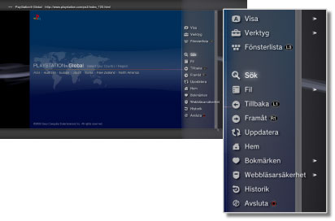

Nätverk > Webbläsarens grundfunktioner
Webbläsarens grundfunktioner
Visa skärmen

(1) |
Sidans titel |
|---|---|
(2) |
Sidans adress |
(3) |
SSL-ikon |
(4) |
Upptagen-symbol |
(5) |
Ikon för webbläsarsäkerhet |
(6) |
Länkadress |
(7) |
Pekare |
Bläddringsmetoder
| Riktningsknappar | Flytta markören till en länk. |
|---|---|
| Högerspak | Bläddra i önskad riktning. |
Använda menyn
Om du trycker på  -knappen visas menyn där du kan utföra olika funktioner och inställningar. Du kan visa eller dölja den här menyn genom att trycka på -knappen. Menyalternativen skiljer sig åt mellan bläddringsläget och fönsterläget.
-knappen visas menyn där du kan utföra olika funktioner och inställningar. Du kan visa eller dölja den här menyn genom att trycka på -knappen. Menyalternativen skiljer sig åt mellan bläddringsläget och fönsterläget.

Ange en adress (URL)
När du trycker på START-knappen visas ett tangentbord så att du kan ange en adress. Om du väljer  efter att ha angett en adress stängs tangentbordet ned och sidorna med den angivna adressen öppnas.
efter att ha angett en adress stängs tangentbordet ned och sidorna med den angivna adressen öppnas.
Kopierar text
Du kan Kopiera text från en sida i webbläsaren.
1. |
Använd vänsterspaken för att flytta pekaren till texten du vill kopiera och tryck därefter på |
|---|---|
2. |
Håll ner |
3. |
Släpp upp |
4. |
Välj [Kopiera] i den menyn som visas. |
Tips!
- Du kan klistra in den text du kopierat med [Klistra in]-knappen på tangentbordet på skärmen.
- Om du väljer [Sök] i steg 4, kan du göra en Internetsökning med den kopierade texten som sökord.
Skriva ut en webbsida
För att använda den här funktionen måste du först ställa in en skrivare genom att välja  (Inställningar) > [Skrivarinställningar] > [Val av skrivare].
(Inställningar) > [Skrivarinställningar] > [Val av skrivare].
1. |
Gå till den webbsida du vill skriva ut, och tryck sedan på |
|---|---|
2. |
Välj [Fil] > [Skriv ut den här sidan]. |
3. |
Kontrollera skrivarinställningarna. |
4. |
Välj [Skriv ut]. |
Tips!
Skrivare som kan användas varierar från land till land. För mer information, besök SIE-webbplatsen för din region.
Öppna flera fönster
Du kan öppna flera fönster samtidigt. Sätt markören på länken, tryck in och håll ner  -knappen tills länken öppnas i ett nytt fönster.
-knappen tills länken öppnas i ett nytt fönster.